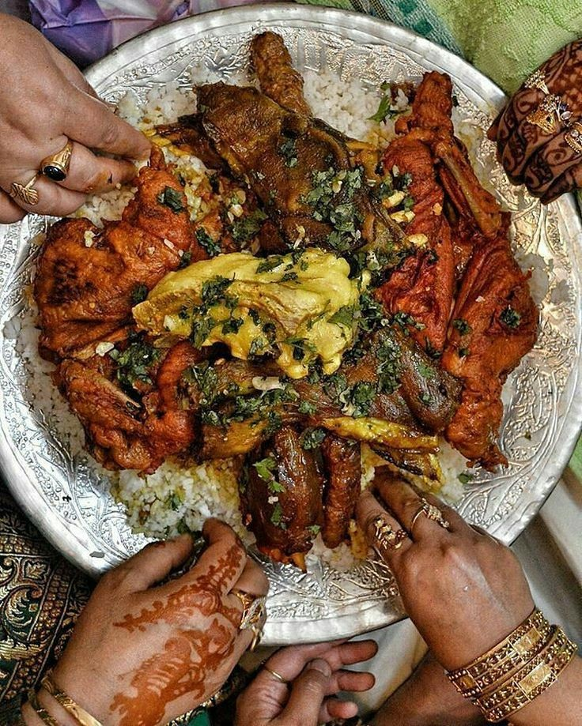

Rogan Josh
Kashmiri lamb in a red gravy coloured by ratan jot and Kashmiri chilli, without onion or garlic

Contains: milk
Ingredients
Quantities for 4.
- 800g on the bone Mutton
- 1 cup, whisked Yogurt
- 3 tbsp Kashmiri Chillithe colour comes from here, not from heat
- 2 tbsp Fennel Powder
- 1 tbsp Dry Ginger Powder
- a good pinch Asafoetida
- 2 Black Cardamom
- 4 Cardamom
- 2 pieces Cinnamon
- 5 Cloves
- 2 Bay Leafoptional
- 5 tbsp Ghee
- to taste Salt
Cookware
stovetop
Checked against the ingredient list for ten allergens: milk, egg, fish, crustaceans, tree nuts, peanuts, sesame, mustard, soy and gluten. Brands vary, so read the label on anything new to you.
Before you start
- Kashmiri Pandit cooking uses no onion or garlic at all. Fennel and dry ginger do that work, which is why both are in tablespoons here rather than teaspoons.
- The red is from Kashmiri chilli and traditionally ratan jot (alkanet root), not from tomato. There is no tomato in this dish.
Method
- Heat the ghee and bloom the asafoetida and whole spices until fragrant.
- Add the mutton and sear over high heat until browned on all sides.
- Take the pan off the heat. Stir the Kashmiri chilli, fennel and dry ginger into the whisked yogurt, then add it to the meat, stirring constantly.Off the heat and constant motion. This is where yogurt splits.
- Return to low heat and cook, stirring, until the gravy thickens and the fat begins to show, about 10 minutes.
- Add a cup of hot water and salt, cover, and simmer 60-70 minutes until the meat is tender and the gravy is deep red and glossy.
- Rest 15 minutes. Serve with plain rice.
Safe temperatures: Whole cuts of mutton, beef and pork are done at 63°C / 145°F, rested 3 minutes. A long braise passes that well before the meat is tender. Reheat leftovers to 74°C / 165°F. FoodSafety.gov
Storage
Keeps 3 days refrigerated and improves overnight. Freezes 2 months; the yogurt-based gravy can look grainy on thawing but comes back together when reheated slowly.
Nutrition Low estimate
High protein: 45 g a serving, 41% of the calories
| Per serving291 g | Per 100 g | |
|---|---|---|
| Calories | 440 kcal | 152 kcal |
| Protein | 45.4 g | 16 g |
| Carbohydrate | 10.5 g | 4 g |
| of which sugars | 3.4 g | 1 g |
| Fibre | 4.9 g | 2 g |
| Fat | 24.4 g | 8 g |
| of which saturated | 12.8 g | 4 g |
| of which unsaturated | 9.5 g | 3 g |
Ingredients given to taste count as zero, so the real figures run a little higher. Nearest database match used for mutton. Estimated from raw ingredients using USDA FoodData Central.
More like this: Gluten-free Indian recipes · No onion no garlic recipes · Kashmiri recipes
Times, yields, allergens and nutrition are guidance. Use your own judgement on doneness and on storing. More in About.